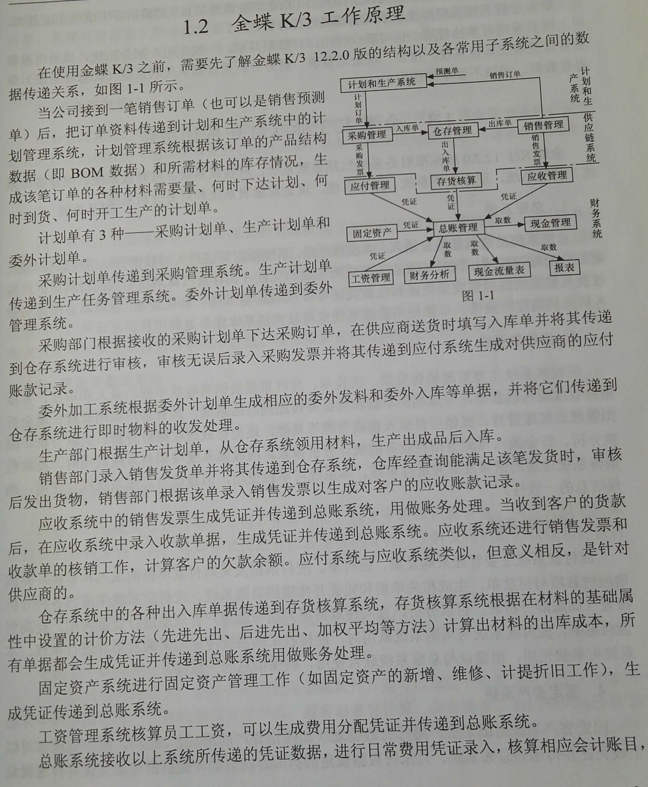

1 通用型ERP一般只包括简单通用功能：买入卖出、仓库管理、产品分类、客户关系等，这些功能只是简单的记录，没有充分考虑企业的性质和一些特殊需求
2 专业的ERP按照所应用到的行业不同，而进行特别定制，例如：灵创软件专业服装ERP，他就要考虑服装的特点，用通用型ERP就会带来很多的不便，专业的服装ERP考虑服装多色、多款、多号，季节性等的特点，管理方面的设计会更细致化。
3 C/S架构ERP：C/S又称Client/Server或客户/服务器模式或胖客户端。服务器通常采用高性能的PC、工作站或小型机，客户端需要安装专用的客户端软件。
4 B/S架构ERP：B/S是Browser/Server的缩写，也可称为瘦客户端，客户机上只要安装一个浏览器（Browser），如IE，浏览器通过Web Server 同数据库进行数据交互。
核心产品：U9/U8、NC、“通系列”
1 不要将多个服务器组件装在同一个服务器上；
2 服务器类别
核心产品：金蝶K/3、KIS、EAS
1 Windows Server 2003
2 IIS（Web服务器） ；
3 SQL Server 2000（数据库服务器） ；
4 K3第三方软件（K3安装盘），如客户端部件、中间层服务部件、数据库服务部件的相关软件；
在使用金蝶K3进行业务处理之前，首先要建立帐套；帐套是一个数据库文件，用来存放所有业务数据资料，包含会计科目、凭证、帐簿、报表和出入库单据等内容，所有工作都需要登录帐套后才能进行。对帐套的数量没有限制。
建立帐套→系统设置(系统参数设置、基础资料设置、初始数据录入)→结束初始化→业务处理(各种单据、报表处理)→月末结帐→结束处理下一期间业务。
金三是三层结构的客户\服务器数据应用系统，包括服务器端、中间层服务器和客户端。
1 服务器端：SQL Server、OS;
2 中间层服务器端：
3 客户端：
在局域网环境下，如果多用户使用金蝶软件，可以指定一台机器作为数据库服务器和中间层服务器，其他机器作为客户机。服务器上应先安装SQL Server和金蝶软件，客户商计算机只需安装金蝶软件客户端即可；
